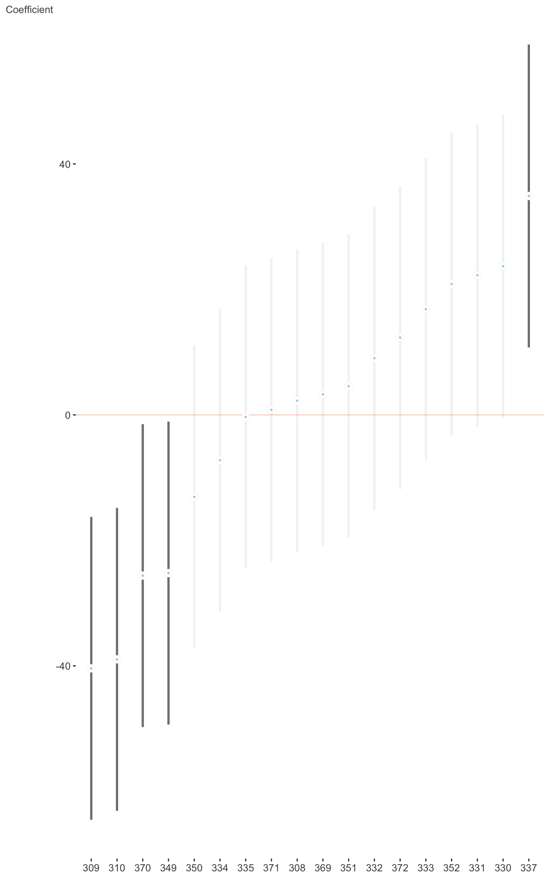
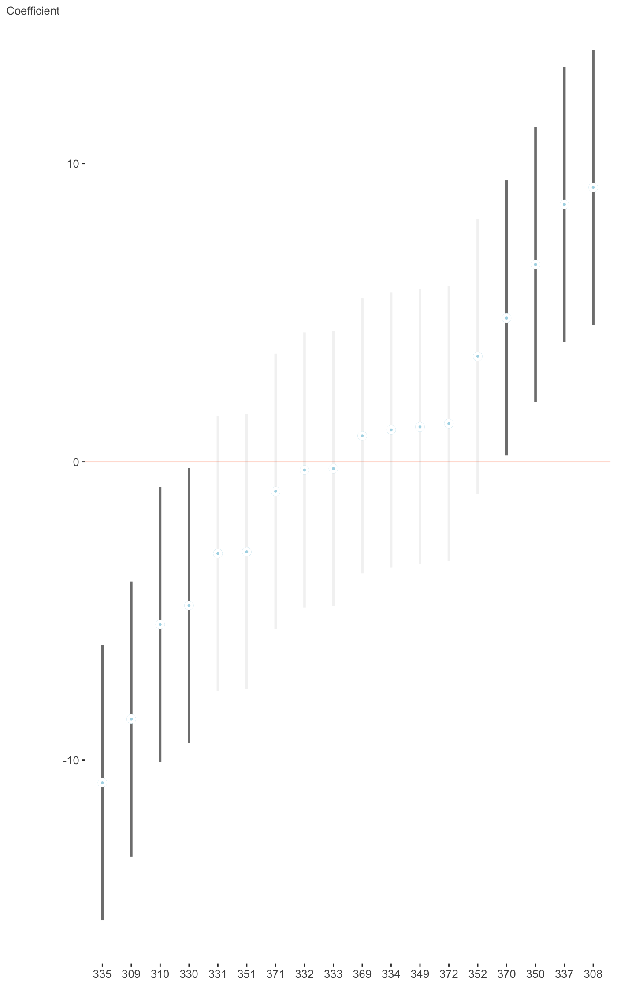

R/plot_coefficients.merMod.R
plot_coefficients.merMod.RdPlot fixed or random effects coefficients for merMod objects.
# S3 method for merMod plot_coefficients(model, order = "decreasing", sd_multi = 2, keep_intercept = FALSE, palette = "bilbao", ref_line = 0, trans = NULL, plot = TRUE, ranef = FALSE, which_ranef = NULL, ...)
| model | The model that is the point of this function. For example, lm, glm, gam, lme4, brms. |
|---|---|
| order | The order of the plots- "increasing", "decreasing", or a numeric vector giving the order. The default is NULL, i.e. the default ordering. Not applied to random effects. |
| sd_multi | The multiplier that determines the width of the interval. Default is 2. |
| keep_intercept | Default is FALSE. Intercepts are typically on a very different scale than covariate effects. |
| palette | A scico palette. Default is 'bilbao'. |
| ref_line | A reference line. Default is zero. |
| trans | A transformation function to be applied to the coefficients (e.g. exponentiation). |
| plot | Default is TRUE, but sometimes you just want the data. |
| ranef | If applicable, whether to plot random effects instead of fixed effects. |
| which_ranef | If plotting random effects, which one to plot. |
| ... | Other arguments applied for specific methods. |
A ggplot of the coefficients and their interval estimates. Or the data that would be used to create the plot.
This plots the fixed or random effects of lme4 objects. For more
information on the fixed effects, see plot_coefficients.It
requires the lme4 package. The plot for random effects is
basically the dotplot demonstrated at ?lme4::ranef, but instead uses
ggplot2 so you would have a little easier time working with
it to do with as you wish (for multiple random effects, a list of ggplot
objects can be returned). Many of the options for fixed effects are
removed, as they either don't make much sense or for practical reasons.
library(lme4) fit_mer = lmer(Reaction ~ Days + (Days|Subject), sleepstudy) plot_coefficients(fit_mer, ranef = TRUE, which_ranef = 'Subject')#> $`(Intercept)`#> #> $Days#>